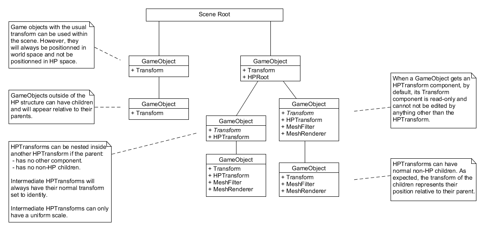
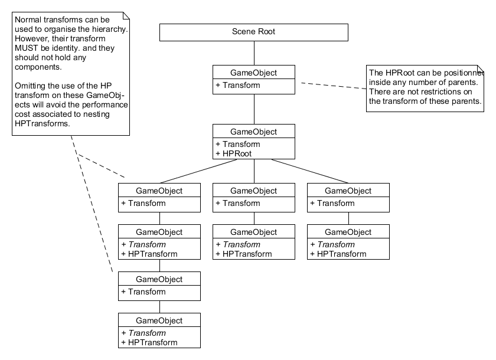
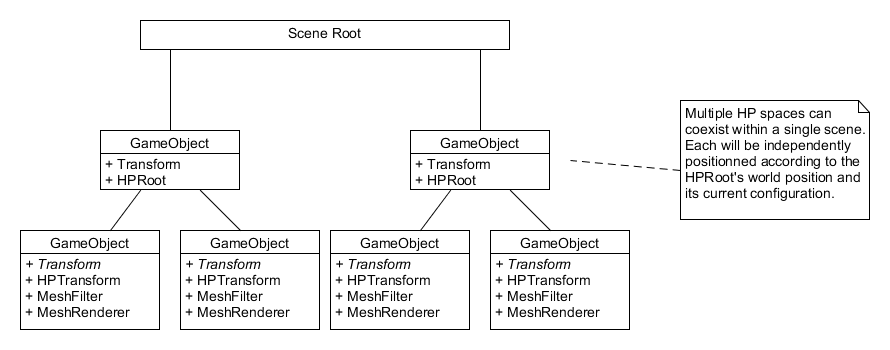

High Precision API
The High Precision (HP) framework allows Unity to render very large worlds by providing a standard way of addressing the limitations of the single-precision floating point system that is used to position and render GameObjects within the engine.
Notice
Currently, only 64 bit windows version is supported.
The High Precision Framework version v1.0.0-preview.2 is compatible with the following versions of the Unity Editor:
- 2020.3 and later
The High Precision Framework is not yet fully integrated with all of Unity's subsystems, such as physics and navigation mesh. See the dedicated page Known Limitations for more information.
Introducing Universe Space
When using the HP framework, the user will be introduced to two new components: The HPTransform and the HPRoot. The HPTransform acts similarly to the Transform we already know. However, rather than positioning an object in world space, it positions a GameObject in universe space, with double floating point precision.
The HPRoot component translates objects positioned in universe space into world space, such that they can be displayed in the scene. It contains a TR (Translation-Rotation) which determines the point in the universe space that corresponds to the root’s position in world space. For example, if the HPRoot has the same TR as an HPTransform, the latter will be positioned, in world space, exactly on the former, with matching rotation and scale.
Under most circumstances, the HPRoot’s transform will be set to the origin of the scene. However, there are exceptions. In the case of AR experiences, down-sizing a city contained in HP space and viewing it on a table could be achieved by scaling down the HPRoot and placing it at the center of the table.
Rendering HP Space
Being in double precision, the universe space can contain planet-scale scenes without needing to worry about precision issues. However, in order to be rendered, it must be translated back into world space. As we have seen in the previous section, the HPRoot controls this process and is the key to implementing various rebasing schemes which dynamically translate our universe space into world space.
Static Rebasing
Static rebasing is the simplest scheme whereby a single point in universe space is positioned near the origin of world space. This is implemented by setting the HPRoot’s TRS to the specified point of interest.
Camera-Centric Dynamic Rebasing
Dynamic rebasing is achieved by constantly adjusting the HPRoot’s TRS to a moving point of interest. This can be implemented using the LocalCoordinateSystem component to tie the HPRoot’s TRS to an HPTransform such as that used to position the camera.
Local Vertical Coordinate System
When rendering a planet, the definition of up depends on where you are standing on the planet. It is often more practical to keep the world space up vector aligned with the planet’s up vector by rotating the HPRoot’s TRS and aligning the HP space’s local up vector with the world’s up vector. An implementation of this is available through the LocalVerticalCoordinateSystem found in the UnityGeospatial framework.
Constraints to the Hierarchy
Some design constraints need to be taken into consideration when building out the scene’s hierarchy. Before using the HP framework, you should be familiar with the following design principles:
 An example of a simple HP hierarchy, where some objects are in HP space while others are only in world space.
 An example of a more complex hierarchy where GameObjects are used for the organization of the scene.
 An example of multiple HP spaces coexisting within the same scene.
Unity Mathematics
The HP framework uses Unity Mathematics. See the following page to help you do the transition.